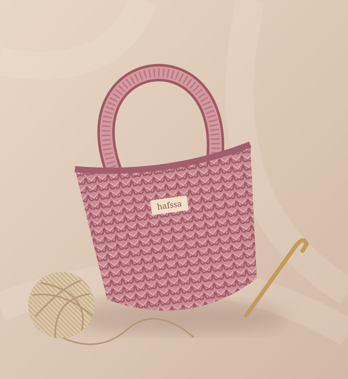

LE CHARME DU FAIT MAINDes mailles,
Des mailles,
de la douceur,
et vous.
Bienvenue dans l’univers de Hafssa Crochet.
Des créations pensées avec soin et réalisées à la main, maille après maille.
✳ Chaque création raconte une histoire.
Imaginé avec douceur.
Créé avec amour.
Créé avec amour.

FAIT MAIN
✿
AVEC AMOUR
L’UNIVERS HAFSSA CROCHET✿
AVEC AMOUR
✿ Fait à la main♡ Le souci du détail✧ Une touche de douceur☏ À votre écoute
DE PETITES CRÉATIONS, DE GRANDES ÉMOTIONS
La collection Hafssa
Un peu de douceur
dans votre quotidien.
✿
La collection se prépare…
Les créations seront présentées ici très bientôt.
En attendant, échangeons sur votre envie de crochet.
✿Le bonheur
au bout du fil.HAFSSA CROCHET · FAIT MAIN
au bout du fil.HAFSSA CROCHET · FAIT MAIN
DERRIÈRE CHAQUE MAILLEUne passion,
Une passion,
un fil à la fois.
Hafssa Crochet, c’est l’envie de partager la beauté des choses faites à la main. Prendre le temps de créer, choisir les détails et transformer un fil en une petite attention.
Une question sur une création ou une envie particulière ? Parlons-en ensemble.
Faisons connaissance ↗Une envie, une question,
un petit bonjour.
Hafssa vous répond directement sur WhatsApp.
Discuter avec Hafssa ↗06 84 20 76 43